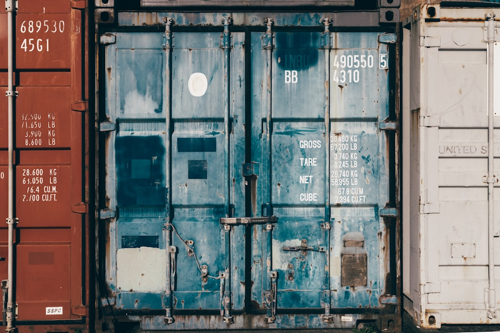

中 수출통제, 허가증이 新무기…'서류 전쟁' 어떻게 싸우나

2023년 8월 중국이 갈륨·게르마늄 수출 허가제를 도입한 이후 2025년 5월 현재까지 갈륨 국제 현물 가격은 통제 이전 대비 최대 9배 수준까지 올랐다가 현재 3~4배 구간을 유지하고 있다. 게르마늄은 통제 이전 대비 약 3배 수준에서 고착화됐다. 기후에너지경제 기획 보도에 따르면 중국은 허가증 발급 소요 기간을 '국가별·품목별'로 차등 운용하고 있다.
구체적 사례로, 중국은 4개월간 봉쇄했던 일본향 갈륨 수출 허가를 2025년 5월 재개하면서도 게르마늄은 봉쇄를 유지했다. 이는 동일 품목을 국가별로 달리 다루는 '차별 허가제'로, 단순한 수출금지와 달리 외교·무역 협상 카드로 활용 가능한 유연한 무기다.
중국 상무부 통계 기준으로 갈륨·게르마늄 허가 신청 건 중 실제 허가 발급까지 평균 45~60일이 소요되며, 일부 거부 사례는 공식 이유 없이 반려되는 것으로 알려졌다. '광산 생산 차질'이 아니라 '서류 지연'으로도 공급망을 통제할 수 있다는 점이 이 전술의 핵심이다.
2025년 4월 중국이 추가로 헬륨 수출에 대한 행정 검토를 예고한 것도 같은 패턴이다. 헬륨은 반도체 공정 냉각·광섬유 제조에 필수로, 한국은 연간 소요량의 약 60%를 중국 및 중국 경유 루트로 조달한다. '통제 예고'만으로도 단기 수급 불안과 가격 급등이 촉발된다는 점에서 선제적 허가제 예고 자체가 무기화되고 있다.
이 전술이 무서운 이유는 WTO 제소 근거를 희석시킨다는 데 있다. '수출금지'가 아니라 '허가 절차 운용'이기 때문에 법적 공격 포인트가 불명확해진다. 실제로 EU·일본·미국이 갈륨·게르마늄 통제에 대해 WTO에 분쟁 절차를 개시했지만 2년 이상 결론 없이 진행 중이다. 허가제 무기화는 법적 분쟁이 길어질수록 효과가 커지는 구조다.
한국 입장에서는 갈륨·게르마늄에 이어 헬륨, 안티모니, 이트륨까지 같은 방식이 확산될 경우 반도체·디스플레이·방산 광학 소재 전 분야에서 허가 리스크가 상시화된다. 현재 한국의 중국산 안티모니 의존도는 약 80%, 이트륨은 92% 수준으로, 허가제 도입 시 즉각적인 공급 단절 없이도 조달 불확실성만으로 설비 투자 결정이 지연되는 효과가 나타난다.
단기 수혜는 중국 외 갈륨·게르마늄 공급원을 보유한 기업이다. 고려아연(2028년 갈륨 연 15.5t 양산), 캐나다 5N Plus(갈륨 정제), 독일 PPM Pure Metals(게르마늄 정제) 등이 중국발 허가 불확실성이 커질수록 바이어의 관심을 받는다.
법무·통관 컨설팅 분야도 반사이익을 받는다. 중국 수출 허가 신청 대리·가속화 서비스를 제공하는 상하이·베이징 소재 전문 로펌과 물류사의 수임료가 2024년 대비 30~50% 올랐다는 현장 보고가 있다. 한국 구매팀이 직접 처리하던 통관 업무를 중국 현지 대리인에게 위탁하는 수요도 증가 중이다.
갈륨·게르마늄 기반 소재를 중국에서 직수입해 국내 반도체·LED·광통신 기업에 납품하는 한국 트레이딩 기업이 직격탄을 맞는다. 허가 지연 45~60일이 그대로 납기 리스크로 전이되고, 계약 위약 리스크를 어느 쪽이 부담할지 불명확한 계약 조건이 분쟁으로 이어진다.
수요 측에서는 차세대 전력 반도체(GaN·SiC 웨이퍼)를 개발 중인 한국 팹리스와 LED 소재 업체가 취약하다. GaN 소자 제조에 갈륨이 직접 투입되며, 현재 한국 내 GaN 웨이퍼 자체 생산 역량은 연 수십 킬로그램 수준으로 국내 수요의 5% 미만에 불과하다.
구매담당자는 계약서 '불가항력(Force Majeure)' 조항에 '수출 허가 발급 지연'을 명시적으로 포함해야 한다. 현재 대부분의 갈륨·게르마늄 공급 계약은 '수출금지'만 불가항력으로 인정하고 허가 지연은 공급자 귀책으로 처리하는 경우가 많아, 실제 분쟁 시 한국 바이어가 손해를 뒤집어쓰는 구조다.
전략적으로는 90일치 이상의 전략 재고 확보와 함께, 캐나다·벨기에·독일 등 비중국 정제 업체와의 스팟 계약 비율을 전체 조달량의 20~30%까지 높이는 것이 현실적인 헤징 선이다. 고려아연 갈륨 양산이 시작되는 2028년 전까지는 이 구간이 유일한 완충지대다.
실제 조달 현장에서는 — 중국 수출 허가 신청 후 '보완 서류 요청'이라는 명목으로 30일이 추가 지연되는 패턴을 반복적으로 목격했다. 신청서 작성 단계부터 중국 현지 물류사가 아닌 인·허가 전문 법무법인과 협력해 서류를 완비하면 보완 요청 빈도를 절반 이하로 줄일 수 있다. 이 비용이 납기 지연에 따른 위약 리스크보다 훨씬 싸다.
이 포스팅은 쿠팡 파트너스 활동의 일환으로 수수료를 제공받습니다.